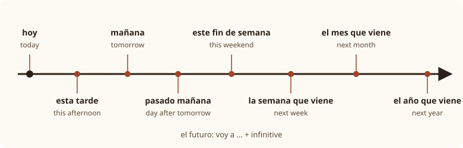

Lesson 14: Travel Plans and the Near Future¶
Planes de viaje y el futuro próximo
So far you have talked about the present: what you do every day, what you like, what you are buying. Now you will talk about what you are going to do: this weekend, next summer, on your next trip. Spanish has a construction that matches English "going to" almost word for word: voy a viajar, "I'm going to travel". With it, and with the verbs you know, you can make plans, talk about wishes and intentions, and predict the weather. This lesson also gives you the words you need on a journey: tickets, stations, luggage and hotel rooms.
Learning outcomes
By the end of this lesson you will be able to:
- talk about plans and intentions with ir a + infinitive;
- use future time expressions: mañana, pasado mañana, la semana que viene, el año que viene, dentro de;
- say what you intend, want and feel like doing with pensar, querer, tener ganas de and esperar;
- name the seasons and predict the weather: va a llover;
- buy a train ticket and book a hotel room.
masculinefeminineplural
14.1 Dialogue: summer plans¶
Laura, from Madrid, and Diego, from Mexico City, work in the same office in Madrid. It is June, and the summer holidays are getting close. Notice that Laura says vosotros for "you all", as people do in Spain, and that Diego slips into a Mexican word.
- Laura: Diego, ¿qué vas a hacer en las vacaciones de verano? — Diego, what are you going to do in the summer holidays?
- Diego: Voy a viajar por el sur de España con mi hermana. Va a venir de México en agosto. — I'm going to travel around the south of Spain with my sister. She's going to come from Mexico in August.
- Laura: ¡Qué bien! ¿Adónde vais a ir? — How lovely! Where are you going to go?
- Diego: Primero vamos a pasar tres días en Madrid. Después pensamos ir a Sevilla y a Granada en tren. — First we're going to spend three days in Madrid. Then we're thinking of going to Seville and Granada by train.
- Laura: ¿Ya tenéis los billetes? — Have you already got the tickets?
- Diego: Todavía no. Mañana voy a comprar los boletos por internet. ¡Perdón, los billetes! En México decimos boletos. — Not yet. Tomorrow I'm going to buy the tickets online. Sorry, the "billetes"! In Mexico we say "boletos".
- Laura: Ja, ja. ¿Y dónde vais a dormir? — Ha ha. And where are you going to sleep?
- Diego: Vamos a reservar un hotel pequeño en el centro de cada ciudad. No queremos gastar mucho. — We're going to book a small hotel in the centre of each city. We don't want to spend much.
- Laura: Cuidado, en agosto va a hacer muchísimo calor en Sevilla. Tenéis que llevar crema solar y un sombrero. — Careful, in August it's going to be extremely hot in Seville. You have to take sun cream and a hat.
- Diego: Sí, ya lo sé. Pero tengo muchas ganas de ver la Alhambra. — Yes, I know. But I really want to see the Alhambra.
- Laura: Te va a encantar. ¿Y cuándo vais a volver? — You're going to love it. And when are you going to come back?
- Diego: El treinta y uno de agosto. ¡Te voy a mandar muchas fotos! — On the thirty-first of August. I'm going to send you lots of photos!
Notice:
- Every plan is ir + a + an infinitive: voy a viajar, vamos a pasar, vais a ir, va a hacer calor.
- A pronoun can go in front of the whole group: te voy a mandar, te va a encantar.
- pensamos ir ("we're thinking of going") and tengo ganas de ver ("I really want to see") are two more ways to talk about the future.
- A ticket is un billete in Spain and un boleto in much of Latin America.
14.2 Vocabulary: travelling¶
Transport and the journey¶
| Spain | Also heard in Latin America | English |
|---|---|---|
| el viaje | the journey, trip | |
| las vacaciones | the holidays (always plural) | |
| el billete | el boleto; el pasaje (plane, bus) | the ticket |
| de ida | sencillo (Mexico) | one-way, single |
| de ida y vuelta | redondo (Mexico) | return, round trip |
| el pasaporte | the passport | |
| la maleta | la valija (Argentina, Uruguay) | the suitcase |
| el equipaje | the luggage | |
| el aeropuerto | the airport | |
| el avión / el vuelo | the plane / the flight | |
| la estación (de tren, de autobuses) | the (train, bus) station | |
| el andén | the platform | |
| el tren | the train | |
| el autobús | el camión (Mexico), el colectivo (Argentina), la guagua (Caribbean) | the bus |
| el coche | el carro, el auto | the car |
| conducir | manejar | to drive |
| la salida / la llegada | departure / arrival |
Table 14.1. Travel words. The Spanish words in the first column are understood everywhere.
To say how you travel, use en + the vehicle, with no article: en tren, en avión, en autobús, en coche, en bici. The exception is "on foot": a pie, or andando (Spain), caminando (Latin America).
Common mistake: coger in Latin America
In Spain the everyday verb for catching a bus or train is coger: Cojo el autobús a las ocho. In Mexico, Argentina and several other countries this verb is a rude word. Use tomar, which is correct and polite everywhere: Tomo el autobús a las ocho.
The hotel¶
| Spanish | English |
|---|---|
| la reserva (Spain) / la reservación (Mexico) | the booking, reservation |
| reservar | to book |
| una habitación individual | a single room |
| una habitación doble | a double or twin room |
| con cama de matrimonio | with a double bed |
| con dos camas | with two beds |
| con baño | with a bathroom |
| el desayuno (incluido) | breakfast (included) |
| la recepción | reception |
| la llave | the key |
| libre / completo | available / full |
| el albergue | the hostel |
Table 14.2. Hotel words.
Places to go¶
| Spanish | English |
|---|---|
| la playa | the beach |
| la montaña | the mountains |
| el campo | the countryside |
| el pueblo | the village, small town |
| el extranjero | abroad (ir al extranjero) |
| ir de vacaciones | to go on holiday |
| hacer turismo | to go sightseeing |
| hacer la maleta | to pack |
Table 14.3. Holiday destinations and phrases.
14.3 Grammar: ir a + infinitive¶
Form¶
Take the present tense of ir (Lesson 10), add a, and then an infinitive. Only ir changes; the infinitive stays the same for every person.
| Person | ir | + a + infinitive | English |
|---|---|---|---|
| yo | voy | voy a viajar | I'm going to travel |
| tú | vas | vas a viajar | you're going to travel |
| él, ella, usted | va | va a viajar | he's, she's, you're going to travel |
| nosotros, nosotras | vamos | vamos a viajar | we're going to travel |
| vosotros, vosotras | vais | vais a viajar | you're going to travel (Spain) |
| ellos, ellas, ustedes | van | van a viajar | they're, you're going to travel |
Table 14.4. The near future. Practice hides the forms of ir.
- Voy a visitar a mis abuelos. — I'm going to visit my grandparents.
- ¿Vas a venir a la fiesta? — Are you going to come to the party?
- Mis padres van a comprar una casa en la playa. — My parents are going to buy a house by the sea.
- No vamos a salir esta noche. — We're not going to go out tonight.
Common mistake: forgetting a
The little word a is required: Voy a comer, never Voy comer. In fast speech it often blends with a following a or with the a of va, so va a ir can sound like "vair", but it is always written.
Uses¶
- Plans and intentions, things you have decided to do: Este verano voy a aprender a nadar.
- Predictions based on what you can see or know now: Mira esas nubes. Va a llover. ("Look at those clouds. It's going to rain.")
- Let's …: vamos a + infinitive is also a suggestion, like "let's": ¡Vamos a bailar! ("Let's dance!"). On its own, ¡Vamos! means "Let's go!" or "Come on!"
Pronouns with ir a¶
As with every infinitive construction (Lessons 11 and 13), a pronoun goes either before ir or on the end of the infinitive. The meaning is the same.
| Before ir | Attached to the infinitive | English |
|---|---|---|
| Te voy a llamar. | Voy a llamarte. | I'm going to call you. |
| Me voy a levantar temprano. | Voy a levantarme temprano. | I'm going to get up early. |
| Lo vamos a reservar. | Vamos a reservarlo. | We're going to book it. |
| Te va a encantar. | — | You're going to love it. |
Table 14.5. Pronouns with ir a. With gustar-type verbs such as encantar, the pronoun goes before ir.
When things will happen¶

| Spanish | English |
|---|---|
| hoy | today |
| esta mañana / esta tarde / esta noche | this morning / this afternoon / tonight |
| mañana | tomorrow |
| mañana por la mañana | tomorrow morning |
| pasado mañana | the day after tomorrow |
| el lunes / el lunes que viene | on Monday / next Monday |
| este fin de semana | this weekend |
| la semana que viene / la próxima semana | next week |
| el mes que viene / el próximo mes | next month |
| el año que viene / el próximo año | next year |
| en verano / en agosto | in summer / in August |
| dentro de dos días | in two days' time |
| pronto / algún día | soon / some day |
Table 14.6. Future time expressions. Que viene ("that is coming") and próximo ("next") mean the same.
Mañana, mañana
mañana means both "tomorrow" and "morning". With an article it is the morning: la mañana. Without one it is tomorrow. So "tomorrow morning" is mañana por la mañana, which sounds odd at first but is perfectly normal.
The time expression can go at the beginning or at the end: La semana que viene vamos a ir a Lima = Vamos a ir a Lima la semana que viene.
The present for the future¶
As in English, the present tense can also refer to the future when the plan is fixed or follows a timetable:
- Mañana voy a Valencia. — Tomorrow I'm going to Valencia.
- El tren sale a las siete y cuarto. — The train leaves at a quarter past seven.
- ¿Qué haces el sábado? — What are you doing on Saturday?
A future tense also exists
Spanish also has a simple future tense: viajaré ("I will travel"), iré ("I will go"). It is common in writing, in formal speech and in weather forecasts, and you will meet it in your next course. For everyday plans, ir a + infinitive is what most people say, and it is all you need at this level.
14.4 Grammar: wishes, intentions and the weather ahead¶
Four more ways to talk about the future¶
Each of these verbs is followed directly by an infinitive.
| Structure | Meaning | Example |
|---|---|---|
| pensar (e→ie) + infinitive | to intend, to be thinking of | Pienso estudiar en Chile. — I'm thinking of studying in Chile. |
| querer (e→ie) + infinitive | to want to | Quiero conocer Perú. — I want to get to know Peru. |
| tener ganas de + infinitive | to feel like, to look forward to | Tengo ganas de ir a la playa. — I feel like going to the beach. |
| esperar + infinitive | to hope to | Espero volver pronto. — I hope to come back soon. |
| preferir (e→ie) + infinitive | to prefer to, would rather | Prefiero ir en tren. — I'd rather go by train. |
Table 14.7. Verbs followed by an infinitive.
pensar is an e→ie verb, like querer:
| Person | pensar (e→ie) |
|---|---|
| yo | pienso |
| tú | piensas |
| él, ella, usted | piensa |
| nosotros, nosotras | pensamos |
| vosotros, vosotras | pensáis |
| ellos, ellas, ustedes | piensan |
Table 14.8. The verb pensar. Without an infinitive it means "to think": pienso que sí, "I think so".
The difference between them is one of certainty. Voy a ir is a decision. Pienso ir is an intention, not yet fixed. Quiero ir is a wish. Tengo ganas de ir is a feeling: you are looking forward to it. Espero ir is a hope, perhaps depending on things you cannot control.
Worked example: from wish to plan
Ana talks about a trip to Argentina, from least certain to most certain.
- A wish: Quiero ir a Argentina algún día.
- A feeling: Tengo muchas ganas de ver las cataratas del Iguazú.
- An intention: Pienso ir el año que viene.
- A decision: Voy a comprar los billetes la semana que viene.
- A prediction: Va a ser un viaje fantástico.
The seasons¶
| Spanish | English |
|---|---|
| la primavera | spring |
| el verano | summer |
| el otoño | autumn, fall |
| el invierno | winter |
Table 14.9. The seasons. "In summer" is en verano, usually without the article.
The weather forecast¶
In Lesson 10 you described the weather with hacer (hace calor, hace frío). To predict it, put the same expressions after va a:
| Today | Tomorrow | English |
|---|---|---|
| Hace sol. | Va a hacer sol. | It's going to be sunny. |
| Hace calor. | Va a hacer calor. | It's going to be hot. |
| Hace frío. | Va a hacer frío. | It's going to be cold. |
| Hace viento. | Va a hacer viento. | It's going to be windy. |
| Llueve. | Va a llover. | It's going to rain. |
| Nieva. | Va a nevar. | It's going to snow. |
| Está nublado. | Va a estar nublado. | It's going to be cloudy. |
| Hay tormenta. | Va a haber tormenta. | There's going to be a storm. |
Table 14.10. Weather now and weather ahead. Llover (o→ue) and nevar (e→ie) are used only in the third person singular.
Note the last line: the future of hay ("there is") is va a haber ("there is going to be"), never van a haber, even with a plural: Va a haber muchos turistas.
- Mañana va a llover en el norte y va a hacer sol en el sur. — Tomorrow it's going to rain in the north and be sunny in the south.
- Las temperaturas van a subir este fin de semana. — Temperatures are going to rise this weekend.
14.5 Practice¶
Buying a train ticket¶
At the ticket office of a station in Madrid. Read both parts aloud.
- Buenos días. Quisiera un billete de ida y vuelta para Granada, por favor. — Good morning. I'd like a return ticket to Granada, please.
- ¿Para qué día? — For which day?
- Para el viernes por la mañana. ¿A qué hora sale el primer tren? — For Friday morning. What time does the first train leave?
- Sale a las ocho y llega a las once y media. — It leaves at eight and arrives at half past eleven.
- Perfecto. Y la vuelta, el domingo por la tarde. — Perfect. And the return, on Sunday afternoon.
- Muy bien. Son noventa euros. ¿Va a pagar con tarjeta? — Very well. That's ninety euros. Are you going to pay by card?
- Sí. ¿De qué andén sale el tren? — Yes. Which platform does the train leave from?
- Del andén cinco. ¡Buen viaje! — From platform five. Have a good trip!
Booking a hotel room by phone¶
- Hotel Alameda, buenos días, ¿dígame? — Hotel Alameda, good morning, how can I help?
- Buenos días. Quisiera reservar una habitación doble para tres noches, del doce al quince de agosto. — Good morning. I'd like to book a double room for three nights, from the twelfth to the fifteenth of August.
- Un momento, por favor… Sí, tenemos habitaciones libres. ¿Con cama de matrimonio o con dos camas? — One moment, please… Yes, we have rooms available. With a double bed or with two beds?
- Con dos camas, por favor. ¿Cuánto cuesta por noche? — With two beds, please. How much is it per night?
- Noventa y cinco euros por noche. — Ninety-five euros a night.
- ¿Está incluido el desayuno? — Is breakfast included?
- Sí, el desayuno está incluido. ¿A nombre de quién? — Yes, breakfast is included. In what name?
- A nombre de Diego Ramírez. — In the name of Diego Ramírez.
- Muy bien, señor Ramírez. Su reserva está confirmada. — Very good, Mr Ramírez. Your booking is confirmed.
Plans to complete¶
| Who | Plan | Spanish |
|---|---|---|
| I | travel to Peru | Voy a viajar a Perú. |
| you (tú) | sleep in a hostel | Vas a dormir en un albergue. |
| my sister | learn to drive | Mi hermana va a aprender a conducir. |
| we | pack tonight | Vamos a hacer la maleta esta noche. |
| you all (Spain) | take the train | Vais a tomar el tren. |
| they | come back next year | Van a volver el año que viene. |
Table 14.11. Switch on Practice and write the form of ir with a.
Say it
Describe your next holiday, real or imaginary, in five sentences: where you are going to go, how, with whom, where you are going to stay, and what you feel like doing there. For example:
En diciembre voy a ir a Colombia con mi pareja. Vamos a ir en avión. Pensamos pasar una semana en Cartagena. Vamos a dormir en un hotel cerca de la playa. Tengo muchas ganas de bailar salsa.
14.6 Culture: holidays in Spain and Latin America¶
August in Spain. For many Spaniards, the summer holiday means August. Many businesses close or work reduced hours, cities such as Madrid become noticeably quieter, and the coasts fill up. Many families return to el pueblo, the village where their parents or grandparents come from, for the local festival, las fiestas del pueblo.
Long weekends. When a public holiday falls on a Tuesday or a Thursday, many people in Spain also take the Monday or the Friday off, making a four-day weekend called un puente, "a bridge". Easter week, la Semana Santa, is a major holiday across the Spanish-speaking world, with processions in many cities, the most famous in Seville.
The other hemisphere. In Argentina, Chile, Uruguay and the rest of the southern hemisphere, the seasons are the other way round. The long school holidays are in December, January and February, Christmas comes in summer, and July is winter. A plan for las vacaciones de verano means something very different in Madrid and in Buenos Aires.
Getting around. Spain has an extensive high-speed rail network, the AVE, linking Madrid with many large cities in a few hours. In much of Latin America, distances are huge and long-distance buses are the usual way to travel by land; in countries such as Argentina, Chile and Mexico, comfortable overnight buses with reclining seats cover routes of many hours. For the longest distances, people fly.
On the phone. The first word you hear when someone answers the phone depends on the country: ¿Dígame? or ¿Diga? in Spain, ¿Bueno? in Mexico, ¿Hola? in Argentina, and ¿Aló? in many other countries. All of them mean "Hello?"
Wishing someone well. Before a journey, people say ¡Buen viaje! ("Have a good trip!"). Before a holiday: ¡Felices vacaciones! or ¡Que lo pases bien! ("Have a good time!").
14.7 Summary¶
Summary
- The near future: ir + a + infinitive: voy, vas, va, vamos, vais, van a viajar. Use it for plans, for predictions (va a llover) and, with vamos, for "let's".
- Pronouns go before ir or on the end of the infinitive: te voy a llamar = voy a llamarte.
- Time words: mañana, pasado mañana, esta tarde, este fin de semana, la semana que viene, el mes que viene, el año que viene, dentro de dos días. "Tomorrow morning" is mañana por la mañana.
- Intentions and wishes: pienso ir (I intend), quiero ir (I want), tengo ganas de ir (I feel like, I look forward to), espero ir (I hope).
- Weather ahead: va a hacer sol, va a llover, va a nevar, va a estar nublado, va a haber tormenta. Seasons: la primavera, el verano, el otoño, el invierno.
- Travel: un billete (Spain) or un boleto (Latin America) de ida y vuelta; en tren, en avión, a pie; Quisiera reservar una habitación doble. Use tomar, not coger, in Latin America.
14.8 Exercises¶
Exercise 1
Complete: Nosotros ___ a visitar Toledo.
Answer
vamos. Nosotros vamos a visitar Toledo.
Exercise 2
Say "I'm going to travel by train."
Answer
Voy a viajar en tren. Voy a viajar en tren. No article after en with a vehicle.
Exercise 3
Look at the black clouds and predict: "It's going to rain."
Answer
Va a llover. Va a llover.
Exercise 4
Give the Spanish for "the day after tomorrow".
Answer
pasado mañana. pasado mañana
Exercise 5
Give the Spanish for "tomorrow morning".
Answer
mañana por la mañana. mañana por la mañana
Exercise 6
Rewrite with the pronoun attached: Te voy a llamar mañana.
Answer
Voy a llamarte mañana. Voy a llamarte mañana.
Exercise 7
Complete with the right form of pensar: Mis amigos ___ ir a Cuba en invierno.
Answer
piensan. Mis amigos piensan ir a Cuba en invierno. The stem changes e→ie.
Exercise 8
Correct the mistake: Mañana voy visitar a mi tía.
Answer
Mañana voy a visitar a mi tía. Mañana voy a visitar a mi tía. The a after ir is required.
Exercise 9
You are in Mexico. Ask for a round-trip bus ticket to Puebla, using the Mexican words.
Answer
Quisiera un boleto redondo para Puebla, por favor. In Spain the same request would be un billete de ida y vuelta.
Exercise 10
Write three sentences about your plans for next weekend: one with ir a, one with tener ganas de and one with a weather prediction.
Answer
Model answer: El sábado voy a ir al campo con mis amigos. Tengo ganas de caminar por la montaña. Va a hacer buen tiempo. Any sentences with these three structures are correct; check that ir agrees with the subject and that each verb is followed by a or de as needed.
14.9 Quiz¶
Quiz: travel plans and the near future
Exercise 11
¿Qué ___ a hacer tus padres este verano?
- va
- van
- vais
- vamos
Answer
van
Tus padres is plural (ellos), so van.
Exercise 12
Which sentence is a prediction?
- Voy a reservar un hotel.
- Mira el cielo. Va a nevar.
- Pienso ir a Lima.
- Quiero un billete.
Answer
Mira el cielo. Va a nevar.
A prediction based on what you can see uses ir a.
Exercise 13
Tengo muchas ganas ___ ver el mar.
Answer
de
tener ganas de + infinitive.
Exercise 14
Este fin de semana va a ___ mucho calor.
Answer
hacer
Weather with calor uses hacer.
Exercise 15
Give the Spanish for "next year" (either form).
Answer
el año que viene / el próximo año
Exercise 16
Match the Spanish to the English.
| A | B |
|---|---|
| de ida y vuelta | the suitcase |
| el andén | the arrival |
| la maleta | return, round trip |
| la llegada | the platform |
Answer
de ida y vuelta — return, round trip; el andén — the platform; la maleta — the suitcase; la llegada — the arrival
Exercise 17
Put the words in order: "We are going to book a double room."
Words: Vamos / habitación / a / doble. / reservar / una
Answer
Vamos a reservar una habitación doble.
Exercise 18
Tap the wrong word.
Mañana van a haber muchos turistas en la playa.
Answer
Wrong word: van.
Corrected: Mañana va a haber muchos turistas en la playa.
The future of hay is always va a haber, singular.
Exercise 19
Write what you hear.
Dictation. Have someone read the sentence aloud, then write it down.
El año que viene vamos a viajar a México.
Answer
El año que viene vamos a viajar a México.
Exercise 20
Say it aloud.
Quisiera reservar una habitación doble para dos noches.
Answer
Say: Quisiera reservar una habitación doble para dos noches.